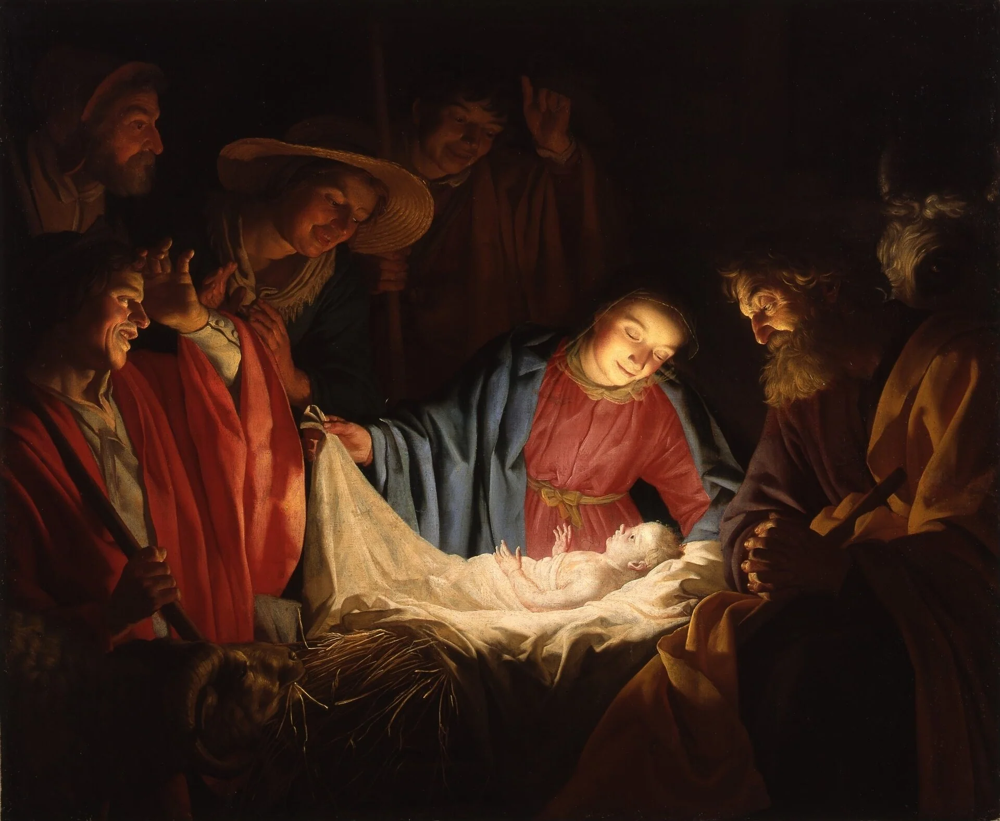
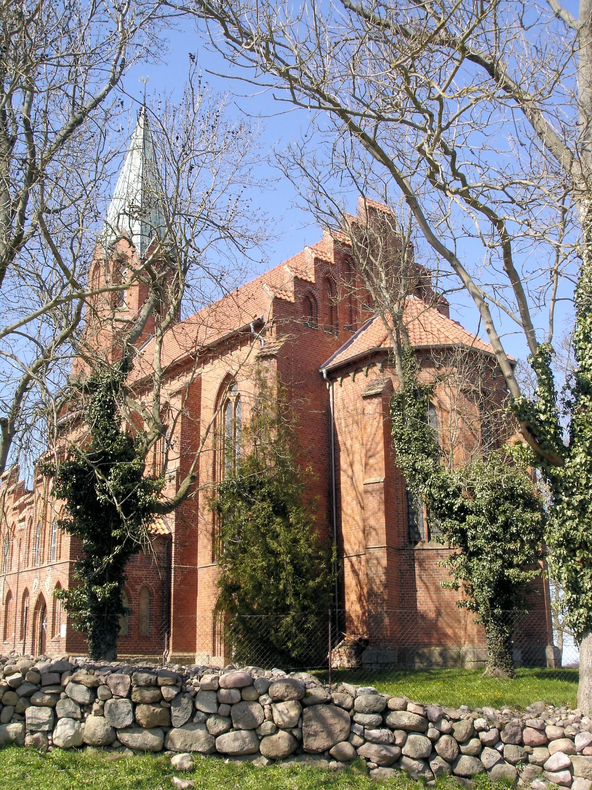
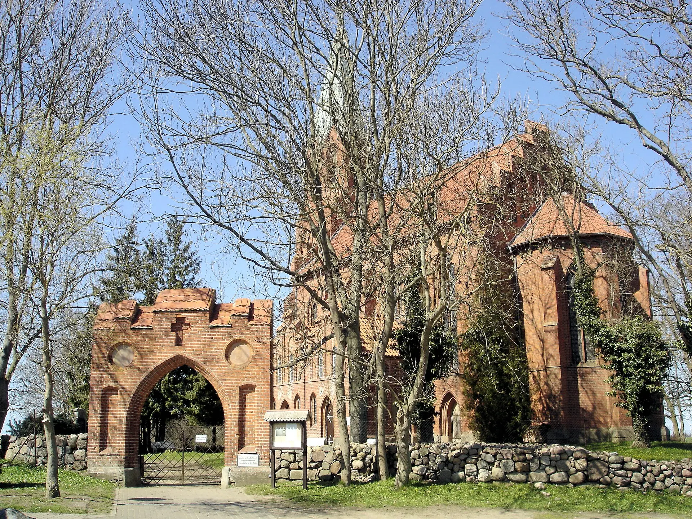
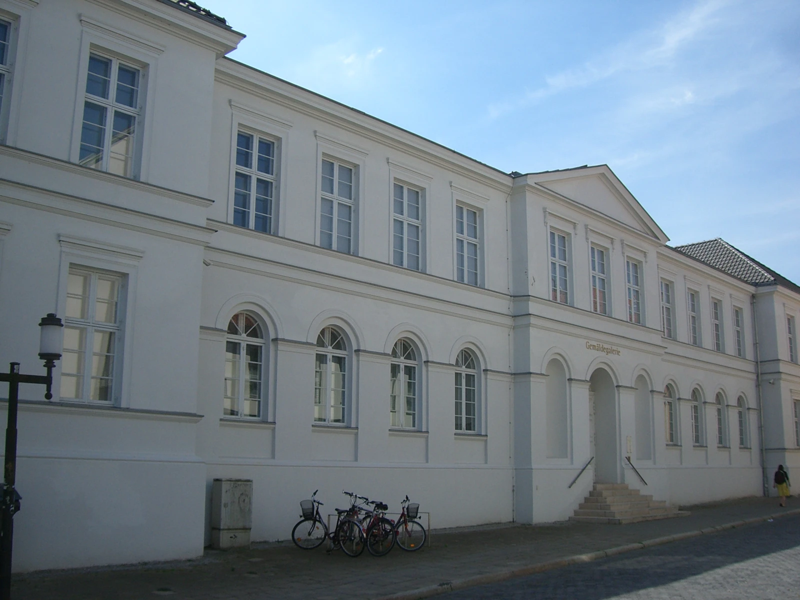
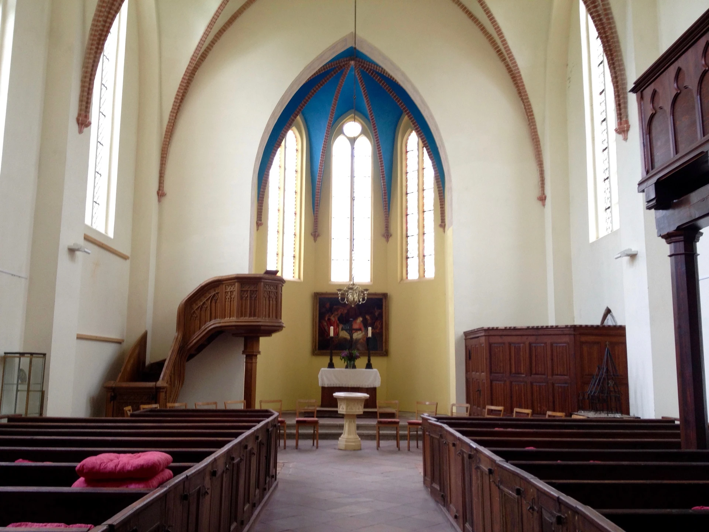

아직 펼치지 않은 카드성탄의 밤을 그린 그림 · 3목자들의 경배이 그림에는 촛불이 보이지 않아요. 그런데 빛은 어디서 오는 걸까요?촛불도 전등도 없는데 환해. 빛이 어디서 나올까?
1622년헤라르트 판 혼트호르스트 · 지금은 독일 그라이프스발트 포메른 주립박물관
목자들의 경배
1869년, 독일 북쪽의 작은 마을 판틀리츠에 새 교회가 섰고, 제단 위에 이 그림이 걸렸어요. 그 뒤 교회는 폭파될 뻔했고, 그림은 이웃 마을들을 떠돌다 돌아왔어요. 지도 위에서 그림이 지나온 길을 한 구간씩 따라가 보세요.
빛나는 아기 그림이 오래오래 여행을 했대. 이 마을에서 저 마을로! 우리도 지도를 보며 따라가 볼까?
검수 전 시안이에요(기준서 1판). 장면에는 교회 신문과 교회·박물관 기록에 있는 것만 옮겼고, 전해지는 이야기는 그렇다고 밝혔어요. 지도는 교회 신문의 기록을 바탕으로 이 안내서가 그린 길잡이 그림이에요. 상상은 ‘눈 감고 상상해 보기’에만 썼어요.
시안 확인용카드 단계 미리 보기
1
1869년, 새 교회의 제단
1869년, 독일 북쪽 포메른 지방의 작은 마을 판틀리츠(Pantlitz)에 붉은 벽돌 교회가 새로 섰어요. 바닷가 도시 슈트랄준트의 건축가 에른스트 폰 하젤베르크가 지은, 그의 단 하나뿐인 교회예요.
교회를 돌보던 마을 후원 가문들이 베를린에서 그림 한 점을 사 와서 제단 그림으로 바쳤어요. 빛나는 아기와 목자들을 그린 「목자들의 경배」였어요.

그 뒤 백 년 가까이, 이 그림은 마을 교회의 제단 그림이었어요. 하지만 누가 그렸는지, 얼마나 귀한 그림인지 알아본 사람은 거의 없었어요.
옛날 작은 마을에 빨간 벽돌 교회가 생겼어. 사람들이 반짝이는 아기 그림을 제단 위에 걸었대.
물어보기너라면 새 교회에 어떤 그림을 걸고 싶어?
2
폭파될 뻔한 교회
1960년대가 끝나 갈 무렵, 이 마을 교회를 폭파해 없애기로 했어요. 교회 물건들은 여기저기로 흩어졌어요.
그런데 교회는 지금도 서 있어요. 왜 폭파하지 않았는지는 두 가지 이야기가 전해져요. 하나는 폭파를 맡은 사람이 이렇게 말했다는 이야기예요.

“교회는 폭파하지 않겠소!”
전해지는 이야기 · 교회 신문(2013)에 실린 말을 이 안내서가 옮김
다른 하나는 폭파하러 온 사람들이 판틀리츠를 슈트랄준트 옆 판텔리츠(Pantelitz) 마을과 헷갈려, 엉뚱한 곳에서 교회를 찾지 못했다는 이야기예요.
그사이 버려진 교회에 십 대 아이들이 몰래 들어왔어요. 그림에는 75cm 길이로 찢긴 자국이 남았어요.
이 교회를 없애려고 한 적이 있었대. 그런데 교회는 지금도 그대로 서 있어!
물어보기교회가 왜 살아남았을까? 두 이야기 가운데 어느 쪽이 더 좋아?
3
그림이 지나온 길
교회가 버려지자 그림도 길을 떠났어요. 교회 신문은 이 그림이 1970년대에 이웃 마을 교회들로 ‘여행을 떠났다’고 적었어요.
‘다음 곳으로’를 눌러, 베를린에서 박물관까지 그림이 지나온 다섯 곳을 따라가 보세요.
‘다음 곳으로’를 눌러 그림이 지나온 길을 한 구간씩 따라가 보세요.
베를린판틀리츠키르히바겐도르프 · 차르네코판틀리츠그라이프스발트
지도는 이 안내서가 그린 길잡이 그림이에요(실제 거리와 다를 수 있어요).
그리고 2006년 여름부터, 판틀리츠 교회 제단 위에는 복사본이 걸려 있어요.
그림이 여행을 떠났대! 지도에서 같이 따라가 볼까?
물어보기그림은 마지막에 어디에 도착할까?
4
박물관의 원본, 교회의 복사본
2005년, 교회는 원본을 그라이프스발트의 포메른 주립박물관에 오래 맡기기로 했어요. 교회를 맡은 베링 목사는 ‘박물관에서는 알맞은 온도와 습도 속에서 제대로 돌볼 수 있다’고 그 까닭을 말했어요.
2013년, 박물관의 학예사는 이 그림을 ‘우리 박물관에서 가장 중요한 그림 가운데 하나’라고 불렀어요.


판틀리츠 교회 제단에는 로스토크의 복원가 게오르크 폰 크노레가 그린 복사본이 걸렸어요. 그런데 그 복사본도 새와 습기에 시달렸어요. 그림 뒤에서 비둘기 뼈가 나오기도 했어요.
복원가는 복사본을 다시 고쳤고, 2014년 부활절에 판틀리츠 교회 제단 위로 다시 걸었어요.
내가 판틀리츠 교인이라면, 이 귀한 그림을 어디에 두고 싶나요?
진짜 그림은 박물관에서 쉬고 있어. 교회에는 똑같이 그린 그림이 걸려 있대.
물어보기소중한 것을 맡길 때, 너는 어디에 두고 싶어?
눈 감고 상상해 보기
겨울 오후, 버려진 교회 안이 조용해요. 깨진 창으로 찬바람이 들어오고, 바닥에는 먼지가 쌓였어요. 제단 위 그림 속 아기만 어둠 속에서 하얗게 빛나요. 누군가 조심스럽게 그림을 내려 천으로 감싸요. 덜컹거리는 수레 소리와 함께, 그림이 이웃 마을로 길을 떠나요.
눈을 감아 봐. 텅 빈 교회에 바람이 휭. 그래도 그림 속 아기는 반짝반짝. 누가 그림을 살살 안고 덜컹덜컹 이웃 마을로 가.
나의 자리
어둠 속에서 누군가 내 얼굴을 환하게 비춰 준 적이 있나요? 나는 누구의 얼굴을 밝혀 주고 싶나요?
너를 보면 환하게 웃는 사람은 누구야?
마음에 닿는 한 줄을 고르거나 직접 써 보세요. 한 줄을 남기면 이 자리의 도장이 찍혀요. 이 기기에만 저장돼요.
더 깊이
궁금한 칸만 펼쳐 읽어도 괜찮아요.
알고 보면
다섯 번 그린 경배 혼트호르스트는 「목자들의 경배」를 다섯 번 그렸어요. 그 가운데 한 점이 이렇게 포메른의 시골 교회까지 왔어요.
다리미로 고친 그림 예전 수리 때 그림 천을 딱딱한 판에 붙였는데, 그림이 그것을 견디지 못하고 부풀었어요. 그러자 다리미로 눌러 고쳤다는 기록이 있어요.
그림을 다시 알아본 사람들 판틀리츠의 히르테 목사가 연구를 부탁했고, 이탈리아에 사는 미술사학자 리카르다 구치가 혼트호르스트의 그림임을 밝혔어요.
자전거 교회 판틀리츠 교회는 2006년 성령강림절부터 자전거 여행자들이 쉬어 가는 ‘자전거 교회’가 되었어요. 탑에 오르면 레크니츠 강 골짜기가 내려다보여요.
기록마다 다른 점
언제 알아보았을까 2001년 복원가 프랑크 회젤이 그림을 손보다가 서명과 1622년이라는 해를 찾았다는 기록이 있어요. 다른 기록은 2004년 옛 액자를 떼어 내고서야 값어치가 드러났다고 적어요.
언제 폭파하려 했을까 교회 신문은 1960년대 끝 무렵이라고 쓰고, 교회 누리집은 1970년대 초, 1972년이라고 적어요.
박물관에 간 해 같은 신문 기사 안에서도 본문은 2005년, 사진 설명은 2004년이라고 적었어요.
복사본이 걸린 때 교회 누리집은 2006년 여름부터라고 적고, 2014년 기사는 복원가가 ‘다섯 해쯤 전에’ 복사본을 그렸다고 적었어요.
1970년대의 길 기록에는 ‘키르히바겐도르프와 차르네코’라는 두 마을 이름만 있어요. 어느 해에 어디에 얼마나 있었는지는 알려지지 않았어요.
그림과 함께 읽는 말씀
그리스도인들은 이 그림을 목자들이 아기를 찾아온 밤의 이야기와 함께 읽어 왔어요. 말씀은 뜻만 옮기고, 본문은 대한성서공회 개역개정으로 이어 드려요.
누가복음 2장 15~16절 천사들이 떠나자 목자들은 “베들레헴으로 가 보자” 하고 서둘러 가서, 마리아와 요셉과 구유에 누운 아기를 찾았어요.
이사야 9장 2절 어둠 속을 걷던 백성이 큰 빛을 보고, 죽음의 그늘진 땅에 사는 사람들에게 빛이 비친다는 말씀이에요.
직접 가 보기
확인한 날 · 2026년 11월 18일 · 바뀌기 쉬운 정보라 정기적으로 다시 확인해요
원본은 독일 그라이프스발트의 포메른 주립박물관(Rakower Straße 9)에 있어요. 화요일부터 일요일까지 오전 10시~오후 5시에 열고, 월요일과 12월 24일·31일은 쉬어요. 어른 입장료는 12유로예요.
그림이 지금 전시실에 걸려 있는지는 가기 전에 박물관에 확인해 주세요. 복사본은 판틀리츠 마을 교회(아렌스하겐다스코 면) 제단 위에 있어요.
그림이 지나온 다섯 곳 금박
지도 위에서 그림이 지나온 다섯 곳을 끝까지 따라가면 카드에 금박이 입혀져요.
베를린에서 박물관까지 다섯 곳을 끝까지 따라가기
판틀리츠 교인이라면 채색
둘 가운데 하나만 해도 카드가 채색돼요.
판틀리츠 교인이라면 그림을 어디에 둘지 고르기
아이와 함께 ‘영화처럼 보기’를 끝까지 보기
근거 보기 (6)
- 메클렌부르크·포메른 교회 신문(2013.12.21, 크리스티네 젠크바일) — 1869년 기증, 1960년대 끝 폭파 계획과 흩어진 물건, 1970년대 키르히바겐도르프·차르네코, 두 가지 전해지는 이야기와 “교회는 폭파하지 않겠소!”, 75cm 찢김, 판에 붙이고 다리미로 고친 일, 2004년 액자를 떼고 드러난 값어치, 히르테 목사와 구치, 2005년 박물관, 베링 목사의 말, 크노레의 복사본과 비둘기 뼈, 프렌센 학예사의 말
- epd 기사(kirche-mv.de, 2014.4) — 2014년 4월 20일 부활절의 다시 봉헌, ‘다섯 해쯤 전’ 그린 복사본, 후원 가문의 기증, ‘열 해 전 다시 찾은 값어치’
- 동독 지역 박물관 소식(ostdeutsche-museen.de): 포메른 주립박물관의 혼트호르스트 — 베를린에서 사서 1869년 후원 가문이 기증, 2001년 복원가 회젤이 찾은 서명과 1622년, 다섯 번 그린 경배
- 아렌스하겐 교회 누리집: 판틀리츠 교회 — 1869년 하젤베르크, 1972년 폭파 계획, 박물관 장기 대여, 2006년 여름의 복사본, 자전거 교회, 탑
- Dorfkirchen in MV: 판틀리츠 교회 — 하젤베르크의 단 하나뿐인 교회, 1970년대 초 버려짐과 1972년 폭파 계획, 판텔리츠와 헷갈렸다는 전설, 1990년부터의 보존 공사
- 포메른 주립박물관: 방문 안내 — 여는 시간, 쉬는 날, 입장료
그림·사진·소리 출처
‘처음 만나는 기독교 문화’의 깊은 카드예요. 카드 단계와 남긴 글은 이 기기에만 저장돼요.